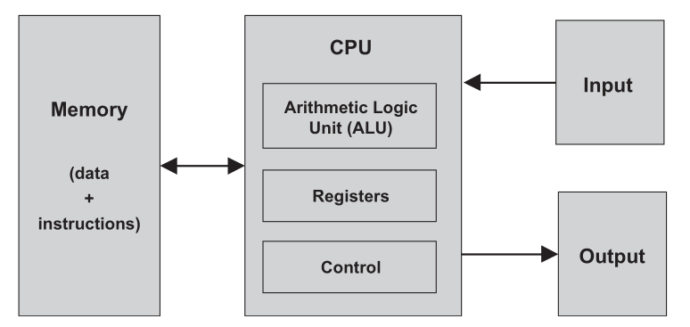

Computer Architecture
From stored programs to the Hack hardware platform.
Finite Hardware, Practically Infinite Uses
A digital computer is unusually versatile: the same finite machine can run games, edit documents, and perform scientific calculations.
Keep the program's instructions in memory, represented and manipulated just like data.
- The computer has a fixed hardware platform and a fixed repertoire of instructions.
- These instructions can be combined like building blocks to form sophisticated programs.
- The program's logic is stored in memory rather than permanently embedded in the hardware.
- Loading different software makes the same hardware behave differently.
Next: What architecture turns this idea into a computer?
What Makes One Machine So Versatile?
A word processor and a game can run on exactly the same physical computer. What changes, and what remains fixed?
The hardware and its instruction repertoire remain fixed. The program stored in memory changes, causing the hardware to execute a different sequence of instructions.
A Practical Blueprint for Computers
- The stored program concept appears in the universal Turing machine (1936) and the von Neumann machine (1945).
- A Turing machine is an abstract model used to study the logical foundations of computation.
-
The von Neumann architecture is the practical blueprint underlying almost all computer platforms.
- It is based on a Central Processing Unit (CPU) that interacts with a memory device, receives data from an input device, and sends data to an output device.
- At its heart is the stored program concept: memory stores both the data being manipulated and the instructions that tell the computer what to do.

Next: Memory, CPU, registers, and input/output.
Read the Architecture
Which component stores the program?
MemoryWhich component executes its instructions?
The CPUWhere is the data stored?
MemoryWhat makes this a stored-program machine?
Instructions and data are both represented in memory.Memory Holds Data and Instructions
Both are binary words stored in an addressed, random-access array of fixed-width locations. Supplying an address selects one word.
- Variables, arrays, and objects become sequences of binary values.
- A selected word can be read or written.
- A write replaces the old value at that address.
- Commands become binary machine-language instructions.
- The instructions are written in an agreed-upon formalism called machine language.
- Some computers encode an operation and its operands in one instruction word; others split them across several words.
- The CPU fetches, decodes, and executes one instruction at a time.
- Changing these stored instructions changes the computer's behavior.
Architectures may place data and instructions in one physical memory or in separate memory units.
Data or Instruction?
Classify each item by the role it plays while a program is running.
The current value of a variable count
The binary word encoding D=D+1
An array element
DataThe command that decides whether to jump
InstructionThe Central Processing Unit
The CPU executes the currently loaded program: it calculates, accesses memory, and controls which instruction executes next.
Performs low-level arithmetic, logical, bitwise, and comparison operations.
Hold a small amount of data locally so the CPU can access intermediate values quickly.
- A computer instruction is a binary code, typically 16, 32, or 64 bits wide.
- Before execution, the instruction must be decoded. Its encoded information is then used to signal the ALU, registers, and memory.
- The control unit performs this decoding and helps determine which instruction must be fetched and executed next.
- Executing an instruction may make the ALU compute a value, manipulate registers, read a memory word, or write a memory word.
- While coordinating these tasks, the CPU also determines the address of the next instruction.
Which CPU Part Is Responsible?
Add two 16-bit values.
ALUKeep an intermediate result nearby.
RegisterInterpret instruction bits and enable a memory write.
Control unitFast Storage Inside the CPU
A RAM retrieval requires a round trip:
- The address travels from the CPU to RAM.
- RAM's direct-access logic selects the addressed memory word.
- The contents of that word travel back to the CPU.
Registers avoid this round trip and make machine-language instructions more compact for two reasons:
- Registers reside physically inside the CPU chip, so accessing them is almost instantaneous.
- There are typically only a handful of registers, compared with millions of memory cells. A machine-language instruction therefore needs only a few bits to specify a register, resulting in a thinner instruction format.
Temporarily stores values and intermediate results, such as a-b while computing (a-b)·c.
Stores the address of a memory word that a later operation will read or write.
Stores the address of the next instruction: increment normally, or load a jump target.
Choose the Register
Remember a-b before multiplying by c.
Remember which RAM word must be read next.
Address registerContinue at instruction 27 after a taken jump.
Load 27 into the Program Counter.Why Memory-Mapped Input/Output?
Computers interact with many different devices: screens, keyboards, printers, scanners, network interfaces, storage devices, and specialized equipment.
- Each device is a unique machine requiring specialized engineering knowledge.
- We therefore make these different devices look the same to the computer. One important idea is memory-mapped input/output (I/O).
- A binary emulation makes an I/O device look to the CPU like an ordinary memory segment. Each device receives an exclusive area called its memory map.
- An input device's memory map continuously reflects its physical state; an output device's memory map continuously drives its physical state.
- Physical input events change values in an input map; software controls an output device by writing values into its output map.
- Hardware provides a memory-like interface, while software follows the device's interaction contract.
- Common standards allow many devices and computer platforms to work together.
- The design of the CPU and the overall platform can be independent of the number, nature, or make of the connected I/O devices.
- Adding a device requires allocating a memory map and recording its base address, usually through the operating system. Programs can then control it by manipulating bits in memory.
Reason About Memory-Mapped I/O
Software wants to detect a key press. Read or write the keyboard map?
ReadSoftware wants to blacken a pixel. Read or write the screen map?
WriteDoes the CPU need a special instruction for every new device?
No. It can use ordinary memory-access instructions.A 16-Bit von Neumann Machine
- ROM: instruction memory
- RAM: data memory
- Memory-mapped screen and keyboard
- The 16-bit ALU
- D: data register
- A: data value, RAM address, or ROM address
- PC: address of the next instruction
- A-instruction:
0vvvvvvvvvvvvvvv - C-instruction:
111accccccdddjjj a,ccompute;dstores;jcontrols jumps
Programs are loaded into ROM from an external file; changing the ROM program changes what the Hack computer does.
Connect Hack to Earlier Lectures
Which instruction type has MSB 0?
A-instructionWhich instruction fields control the ALU?
Thea- and c-bitsWhich register can identify a RAM or ROM address?
The A registerWhich register selects the current ROM instruction?
The Program CounterThe Fetch-Execute Cycle
The Program Counter (PC) is connected to the ROM address input, so ROM continuously emits ROM[PC]—the current instruction.
- If MSB = 0, load the instruction's 15-bit value into A.
- If MSB = 1, use the
a,c,d, andjbits to control the ALU, registers, memory, and jump logic.
- If the jump condition is satisfied, load the PC from A.
- Otherwise, increment the PC.
- In the next cycle, the newly selected
ROM[PC]becomes the current instruction.
Memory access usually takes two Hack instructions: first select an address with an A-instruction, then use a C-instruction to read, write, or jump.
Why Do These Operations Need Two Instructions?
@17
D=M@END
0;JMPThe first instruction places the required RAM or ROM address in A. The second instruction performs the memory read or loads the PC with that address.
We Already Built the Parts
Match each Hack component to the earlier chapter in which its building blocks were constructed.
The remaining problem is architectural: connect these parts and derive the control signals that make them execute Hack instructions.
From Stored Programs to Hack
Instructions live in memory, so software can change the behavior of fixed hardware.
CPU, memory, registers, and I/O cooperate through a fetch-decode-execute cycle.
ROM, RAM, ALU, A, D, PC, screen, and keyboard form a complete 16-bit computer.
Next lecture: Build the Hack CPU and its control logic.